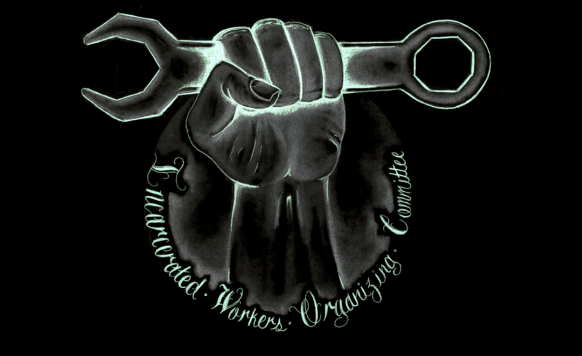

Submitted on Mon, 01/22/2018 - 8:02pm
By IWOC - It's Going Down, January 18, 2018
The following article from the Incarcerated Workers Organizing Committee (IWOC) of the Industrial Workers of the World (IWW) announces that the Mandingo Warriors & Associates has put in an application to be the first union branch to be chartered inside of prison.
The Industrial Workers of the World’s (IWW) Incarcerated Workers Organizing Committee (IWOC) is excited to announce our first Incarcerated Workers Industrial Union 613 branch application. The charter is currently being reviewed by the IWW's General Executive Board. When approved, this will be the first ever IU613 Branch in IWW history. In fact it will be the very first Incarcerated Workers union branch period. Below is their announcement of the formation and a riveting history of prison organizing over the past few decades.
REVOLUTIONARY GREETINGS & FELLOW WORKERS,
On behalf of “Mandingo Warriors & Associates—IWW/IWOC,” we would like to express our most sincere gratitude and appreciation regarding the valuable time, efforts and sacrifices that you, along with the entire IWW/IWOC revolutionary family of this Struggle, have put into this difficult and complex “dilemma” of pursuing the necessary steps required to “effectively” assist in the organizing of those of us, whom are incarcerated within the numerous “Business Corporations” disguised as “Reformative Institutions” (Aka Prisons), around Unifying Principles and a Universal Philosophy that is inclusive of all of Humanity (this is definitely a Struggle Rooted in Equality for all of Humanity and not just the Few & Wealthy!)….
We shall hope and pray that all of our Comrades, in the “Semi-Free Society,” are doing well and are enjoying the best of health possible. Your most recent communication (dated: 10/20/’17) was well received and we look forward to receiving future communications from any and all IWW/IWOC members (with a robust invitation to the African People’s Caucus) in the near future.
Before We/I begin to address your most recent letter, Comrade it is our responsibility to inform and make you guys aware of the latest developments concerning the Movement of our Branch… You guys will have no doubt noticed the change in name/title—“Mandingo Warriors & Associates—IWW/IWOC” (M.W.A.—IWW/IWOC), from the previous name--
A meeting was held, 10/27/’17, in response to your letter and concerning IWW/IWOC’s agenda in general. Amongst the few issues that were discussed and resolved, included the uncertainty of some, as-to whether IWW/IWOC represent the realities of True Revolutionary Movement, or, will the Tribe (another name used to describe the entirety of the M.W organization)—as a Revolutionary organization in-and-of-itself, be bounding itself, by mutual agreement, to Honor, Respect, Uphold and abide by the Constitution, By-Laws, Principles and General Philosophy (whenever related to IWW affairs) of a bunch of “Armchair” Revolutionaries, who pontificate upon revolutionary concepts, but, fall far short of actual Revolutionary Movement (The Tribe has been “burnt” by such “revolutionary organizations” before, in which “they talk a good game,” but, when the “heat” is turned-up they are nowhere to be found…)…
 The lockdown at Stillwater Prison is now in its 27th day. As
The lockdown at Stillwater Prison is now in its 27th day. As  Editorial from the Twin Cities chapter of the Incarcerated Workers Organizing Committee (IWOC) that links horrific conditions inside with ongoing violence.
Editorial from the Twin Cities chapter of the Incarcerated Workers Organizing Committee (IWOC) that links horrific conditions inside with ongoing violence.  Inmates in Florida's prisons launched a month-long strike on Monday in protest of the state's use of "modern day slavery" within its correctional facilities.
Inmates in Florida's prisons launched a month-long strike on Monday in protest of the state's use of "modern day slavery" within its correctional facilities.